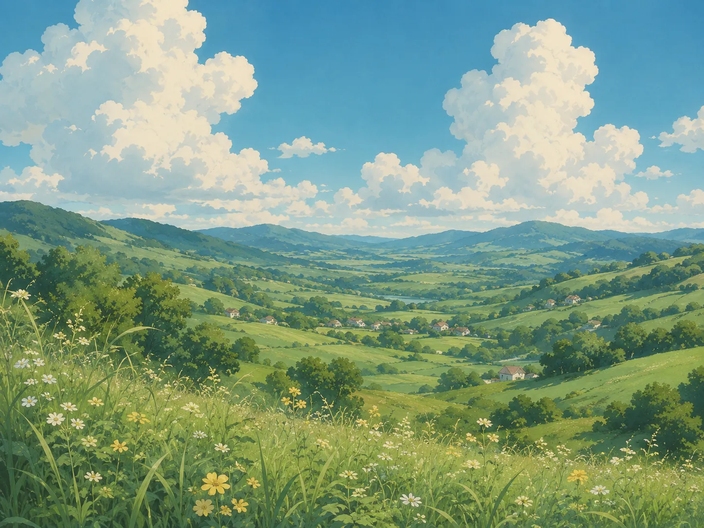
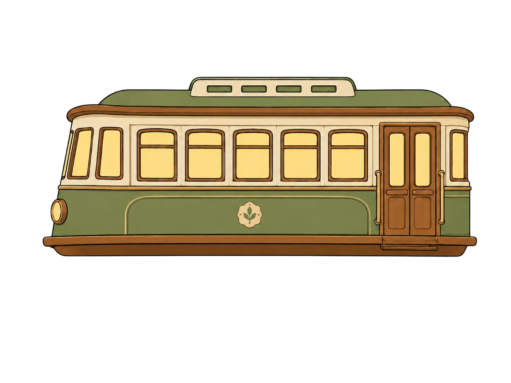
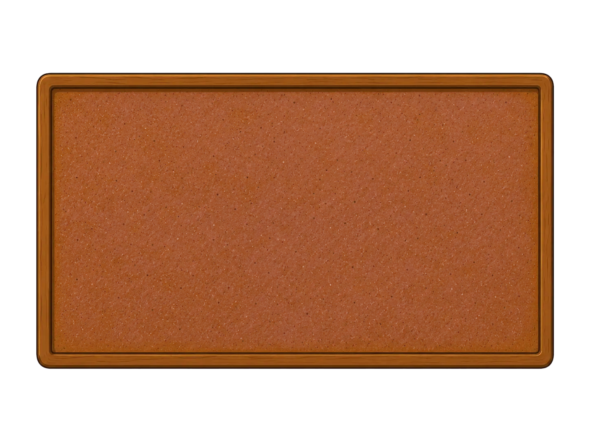
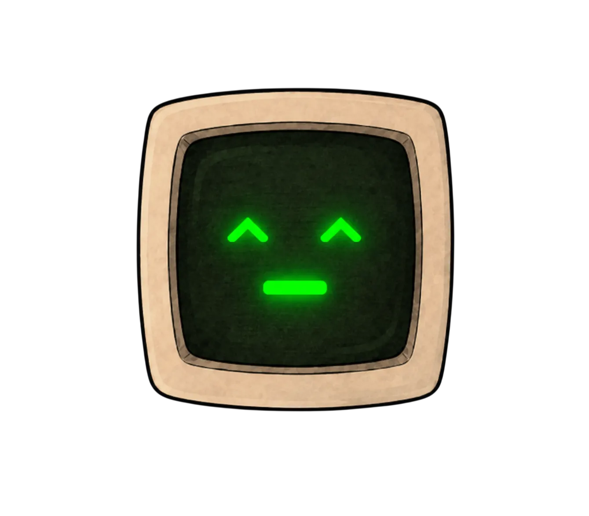
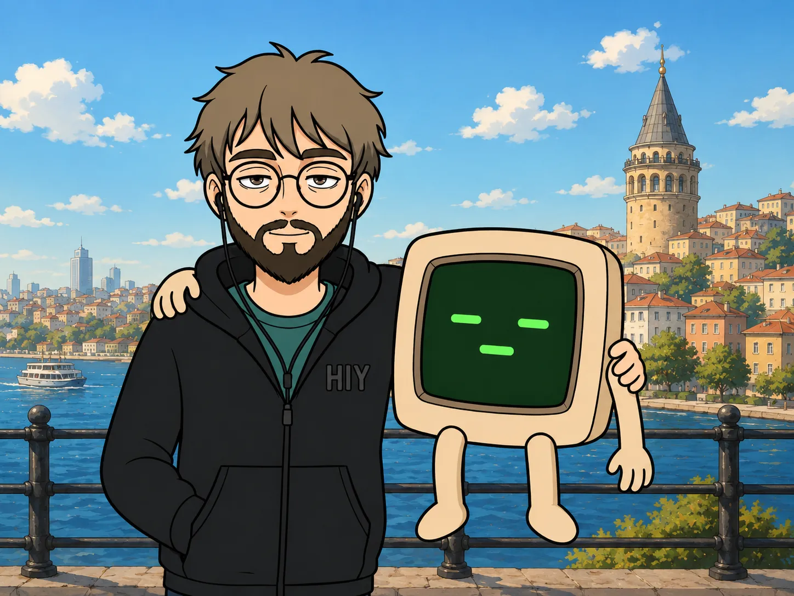
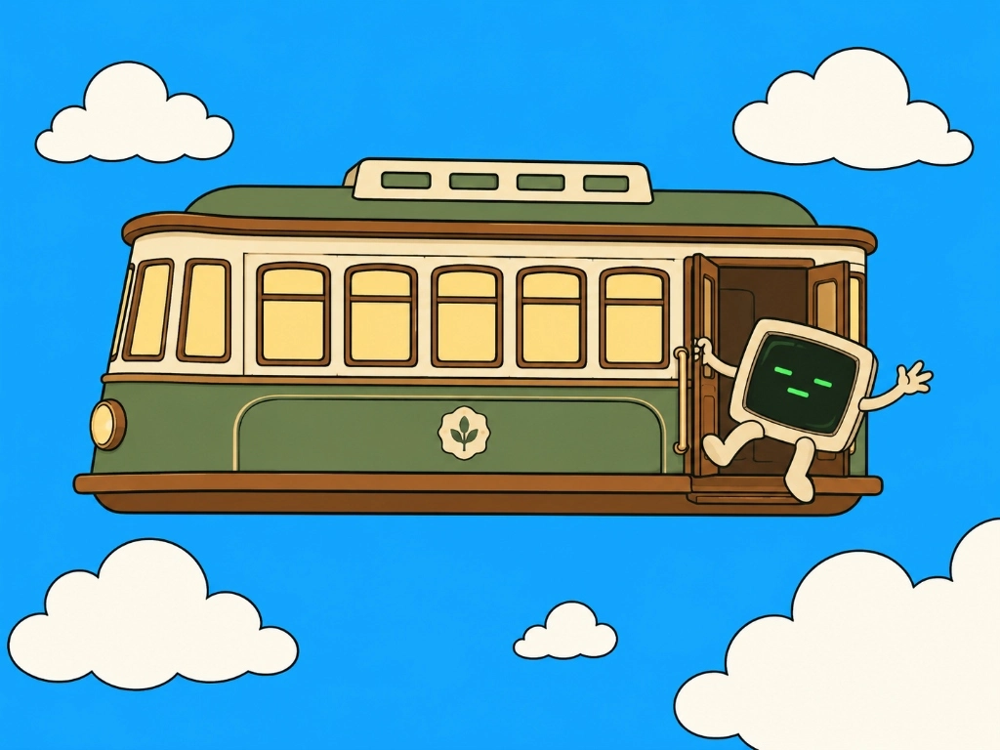
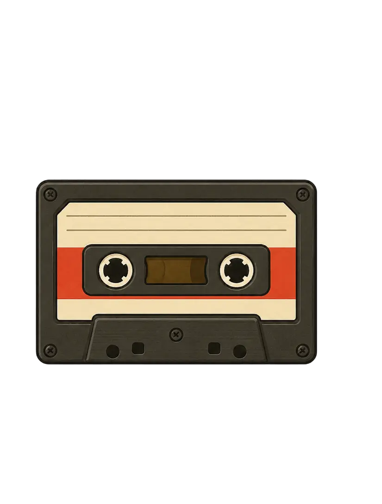
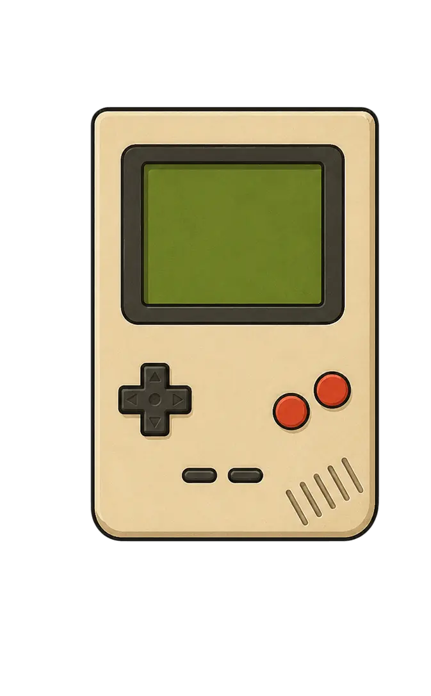
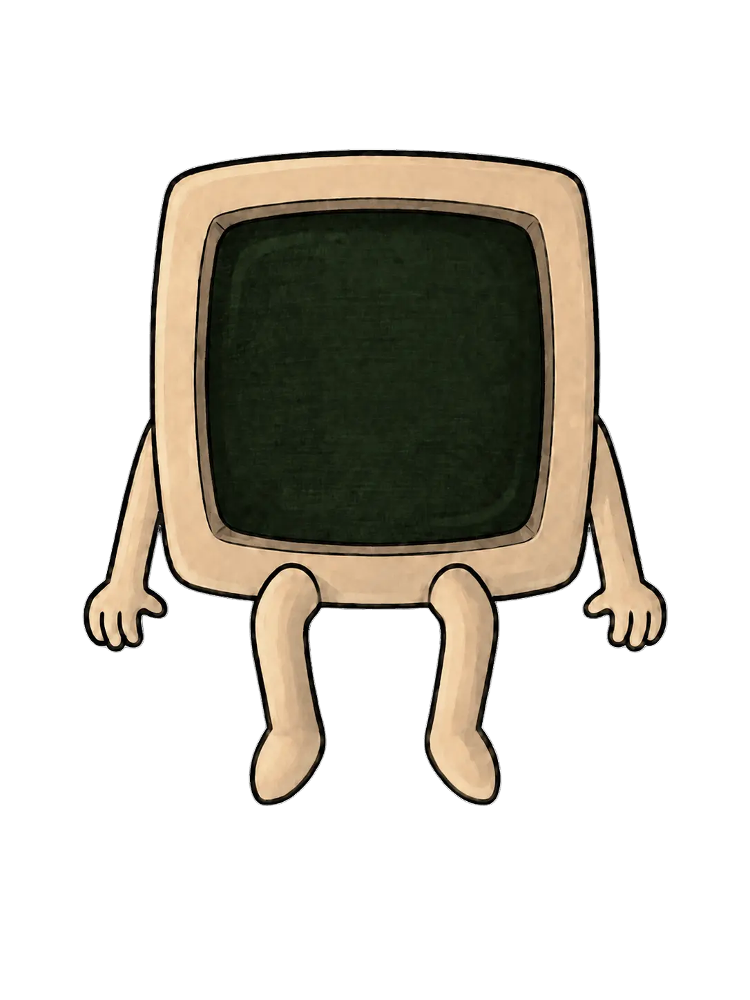
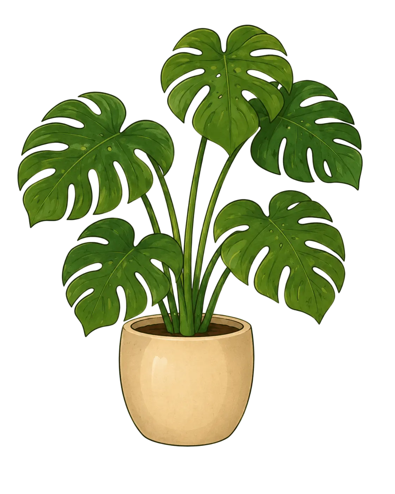
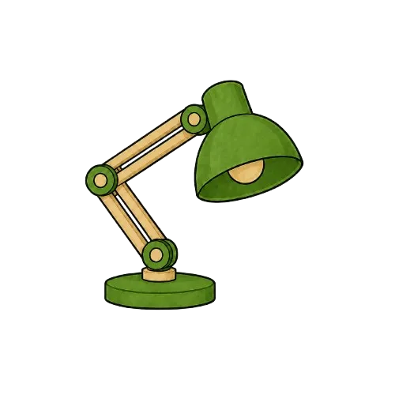
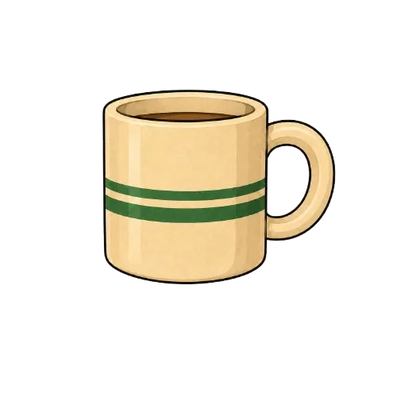
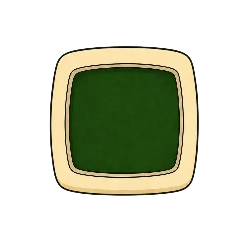
(Buraya daha sonra senin hikayeni yazacağız. Şimdilik bu metin yer tutucu olarak duruyor. Zzz maskotumuz ve maceralarımız yakında burada olacak!)
Bulunan Veriler: 3 Adet // Erişim İzni: ONAYLANDI
Kişisel portfolyo sitemin ilk sürümü. Klasik web dilleriyle oluşturulmuş temel tasarım.
Kullanıcı etkileşimli, görev yöneticisi ve link entegrasyonlu dijital mantar pano uygulaması.
Gelişmiş CSS animasyonları ve sonsuz arka plan döngüsü ile oluşturulmuş uçan tren demosu.